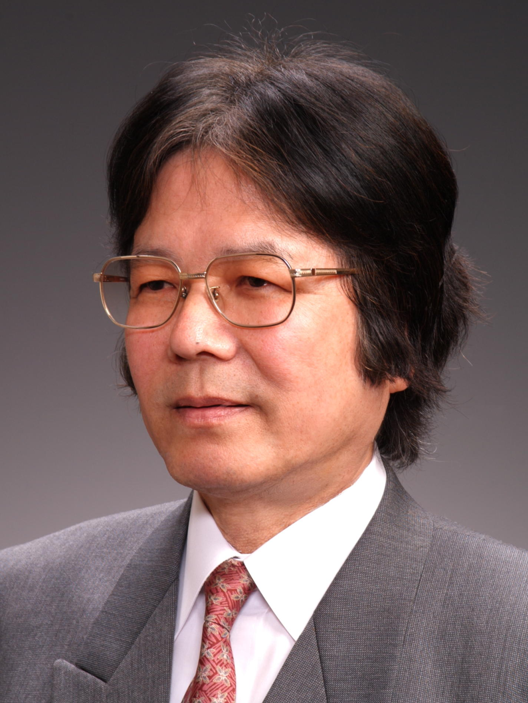
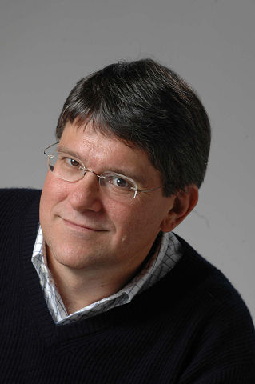
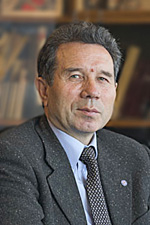
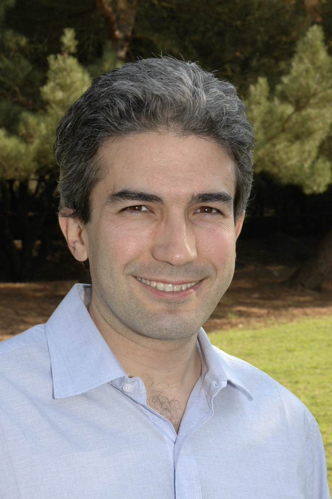
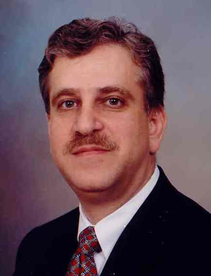
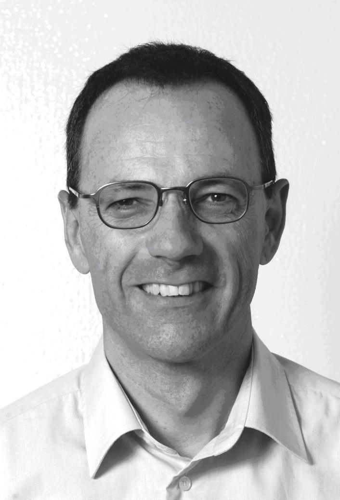

Plenary TalksPlenary Session I July 8, 2009, 9:45-10:40, Congress Hall  Michio Sugeno (Doshisha University, Japan) What Charaterizes Intelligent Systems: Issues of Language Abstract: The human brainware consists of hardware as a neural system and software as a language system. It is said that protolanguage was born two millions years ago. Since then the brain and language have evolved together. It is considered that protolanguage had developed to language with grammar by a hundred thousand years ago. In such a way, language is the most complex system at the highest level among other systems on our earth. Without doubt, human intelligence is based on the functions of language. From this fact it is very natural to characterize an intelligent system by language: capability of handling language or capability of working with language. Discussing some issues of language related to intelligence, we focus on language functions of the brain in this talk.
Why can a human speak? It is because the brain contains the system of language in it as a neurocomputational system: not only lexicon and grammar, but also meaning resources, context and mechanisms of understanding and generating texts. The system of language in the brain can be well described in terms of system networks by Systemic Functional Linguistics initiated by Halliday. He points out “four principles to design the language brain”: Stratification, Metafunction, Instantiation and Composition. Stratification is concerned with the hierarchical structure of language as phonology, lexicogrammar, semantics, and context. Metafunction, for example in the semantic stratum, is concerned with ideational, interpersonal and textual meanings. Instantiation is a relation as understanding and generation between meaning resources and texts. Composition is concerned with the logical structure of language. Biography: Michio Sugeno received the B.S. degree in physics from the University of Tokyo, Japan, the Dr. Eng. degree from Tokyo Institute of Technology, Japan and the Honorary Doctorate from Polytechnic University of Madrid, in 1962, 1975, and 1998, respectively. Plenary Session II July 8, 2009, 11:10-12:05, Congress Hall  Roberto Horowitz (University of California at Berkeley, USA) Modeling, Simulation, Analysis and Control of Freeway Traffic Corridors Abstract: Vehicular traffic congestion remains one of the major world-wide sources of productivity and efficiency loss, wasteful energy consumption, and avoidable air pollution. For example it is estimated that in 2007, congestion caused urban Americans to travel an additional 4.2 billion hours and to purchase an extra 2.9 billion gallons of fuel. In this talk I will describe a set of modeling and simulation Tools for Operational Planning (TOPL) developed to provide quick and quantitative assessments of the benefits that Transportation Management Center (TMC) control policies can provide on freeway corridors, in order to decrease congestion. A freeway corridor typically comprises a 40 kilometer freeway segment on a highly populated urban area, together with its adjoining major urban streets or arterials. The movement of vehicles in a corridor is regulated by programmable field control elements including arterial intersection signals, ramp-metering signals, and message signs that announce emergency conditions, set speed limits and tolls, and provide driver information. Traffic data is primarily collected through inductive loop detectors buried roughly every kilometer along the freeways' payment, as well as detectors located in some of the major corridor arterials. TOPL contains a self-calibrated Cell Transmission Model (CTM) traffic macroscopic simulator. This simulator relies on a well-accepted theoretical model of traffic flow; it is parsimonious and does not require parameters that cannot be estimated from traffic data; and has been tested for reliability on several freeways. Moreover, it is fast, running several hundred times faster than real time, which can be used with real-time measurements and statistically predicted short term future traffic demands to keep track of the current freeway traffic state, as well as make short-term predictions. I will also discuss the qualitative behavior of a single freeway based on the CTM, and will focus on several results regarding the structure and stability of the set of equilibrium states in single freeway, including the fact that the freeway decomposes into disjoint contiguous segments demarcated by bottleneck links, with each segment having qualitatively the same behavior. These properties will be further explored in the formulation of traffic responsive and coordinated ramp-metering policies, including a coordinated policy that minimizes travel time, model calibration and missing on-ramp imputation techniques, and congestion and state estimation techniques. Biography: Roberto Horowitz received a B.S. degree with highest honors in 1978 and a Ph.D. degree in 1983 in mechanical engineering from the University of California at Berkeley. In 1982 he joined the Department of Mechanical Engineering at the University of California at Berkeley, where he is currently a Professor. Dr. Horowitz teaches and conducts research in the areas of adaptive, learning, nonlinear and optimal control. His current research interests include: Micro-mechatronics, control of computer disk file systems, robotics, mechatronics of smart exercise machines and paper handling devices, and Intelligent Vehicle and Highway Systems (IVHS). July 8, 2009, 12:05-13:00, Congress Hall  Stanislav Vassilyev (Institute of Control Sciences, Moscow, Russia) Logic-based Intelligent Control Abstract: We propose new logic-based methods of knowledge representation and processing for intelligent control problems such as automated action planning, automated reconfiguration of control system under faults, automated computation planning, etc. with some application examples related to process control and motion control. 1) constructive logic proving the attainability of control goal and the proof transformation into goal-oriented command sequence; 2) logic modeling the dynamics of controlled system under controls from some fixed set of alternative controls and logic selection of preferable one; 3) automated searching for additional information and/or logic specifications of additional constructive means for providing solvability or acceleration of solving intelligent control problems.
Biography: Stanislav Nikolaevich Vassilyev, born in 1946, Director of the Institute of Control Sciences of Russian Academy of Sciences (RAS), Moscow; Academician of RAS, (Division of Power Engineering, Machine Building, Mechanics, and Control Processes), Editor-in-Chief of the journal Avtomatika i Telemeknanika (Automation and Remote Control). His main research results are related to stability, controllability, optimality and other dynamic properties of nonlinear logic-dynamical systems; to autonomization of control systems under uncertaainty and disturbances. He has developed reduction methods in system theory extending the comparison method, methods of automatic logical inference and generation of hypotheses with application in intelligent control. He coauthored a number of monographs including: "Nonlinear Control Theory: dynamics, Control, Optimization" (Moscow, 2002); "Geoinformatics control system for a territory" (Irkutsk, 2000). Plenary Session III July 10, 2009, 15:00-15:55, Elektronstandart, Red Hall  Francesco Bullo (University of California, Santa Barbara, USA) Geometry, Optimization and Control in Robot Coordination Abstract: Motion coordination is an extraordinary phenomenon in biological systems and a powerful tool in man-made systems; although individual agents have no global system knowledge, complex behaviors emerge from local interactions. This talk focuses on robotic networks, that is, group of robots that communicate and coordinate their motions to perform useful tasks. Example tasks are how to respond to service requests in an environment, how to deploy sensor nodes in locations of interest, and how to partition an environment among cooperating agents. For these tasks, we propose a comprehensive collection of adaptive and distributed algorithms, including a novel a novel deployment and partitioning algorithm with minimal communication requirements. Our approach integrates concepts from queuing and stochastic analysis, geometric optimization, and nonlinear stability theory. Biography: Francesco Bullo received the Laurea degree in Electrical Engineering from the University of Padova in 1994, and the Ph.D. degree in Control and Dynamical Systems from the California Institute of Technology in 1999. From 1998 to 2004, he was affiliated with the University of Illinois at Urbana-Champaign. He is currently a Professor with the Mechanical Engineering Department at the University of California, Santa Barbara. He is the coauthor of the book "Geometric Control of Mechanical Systems" (Springer, 2004) and of the book "Distributed Control of Robotic Networks" (Princeton, 2009). His research interests include cooperative control, vehicle routing, and motion planning for autonomous robots, as well as geometric control of mechanical systems.
July 10, 2009, 15:50-16:50, Elektronstandart, Red Hall  Eyad H. Abed (University of Maryland, College Park, USA) Monitoring the Vulnerability of Complex Uncertain Systems Abstract: The standard tools of control theory begin with assumed accurate models of a system and provide means for system control to achieve desired objectives. When uncertainty is taken into account, methods are also available for obtaining results that enjoy some robustness properties with respect to the uncertainty. However, today many engineered systems are operating at levels of stress and with degrees of uncertainty that render such techniques to be of marginal value in system operation. In this lecture, several existing approaches to the monitoring the vulnerability of complex uncertain systems under stressed operation are discussed, and new contributions are given. The benefits and limitations of using exogenous probe signals are pointed out. Techniques for determining areas within a system that are of most value in system monitoring are developed, and these techniques are shown to provide a means both for detecting and localizing the vulnerability of the complex s ystem to disturbances and to collapse. Biography: Eyad H. Abed received the S.B. degree from the Massachusetts Institute of Technology in 1979, and the M.S. and Ph.D. degrees in 1981 and 1982, respectively, from the University of California at Berkeley, all in Electrical Engineering. He has been with the Department of Electrical and Computer Engineering at the University of Maryland since 1983, where he is presently a Professor and Director of the Institute for Systems Research. Dr. Abed's research interests include system and control theory; nonlinear dynamics and control; electric power system dynamics and control; aerospace control systems; and the analysis and design of complex networks, including communication networks and social networks. Dr. Abed, a Fellow of the IEEE, is a recipient of the Presidential Young Investigator Award, the O. Hugo Schuck Best Paper Award, a Senior Fulbright Scholar Award, the Alan Berman Research Publication Award, and several awards from the University of Maryland. He has been on the editorial board of the IEEE Transactions on Automatic Control, and currently serves on the Advisory Editorial Board of Nonlinear Dynamics. He is also a member of the Executive Committee of the IEEE Control Systems Society, serving as Vice President for Financial Activities of the Society since 2007. Plenary Session IV July 10, 2009, 17:00-17:55, Elektronstandart, Red Hall  Lino Guzzella (ETH Zurich, Switzerland) The Automobile of the Future – Options for Efficient Individual Mobility Abstract: Individual mobility is closely linked to the welfare of any society. Not surprisingly, the number of automobiles has been inexorably increasing and is likely to double in the next twenty years. Clearly, this development creates many benefits and economic opportunities, but also many problems, such as air pollution, traffic fatalities, increased energy consumption and carbon dioxide emission.
Biography: Lino Guzzella has been a full professor at ETH Zurich, Switzerland since 1999. After receiving his mechanical engineering diploma in 1981 and his doctoral degree in 1986, both from ETH, he has held several positions in industry and academia. |
 |
2009 IEEE Multi-conference on Systems and Control |
 |